Slide 3 Modelagem de Bancos de Dados parte 01
3.1 Introdução: Visitando a teoria de Bancos de Dados

Banco de Dados Um banco de dados é uma coleção compartilhada de dados logicamente relacionados, projetada para atender às necessidades informacionais de uma organização. - DATE, C. J. An Introduction to Database Systems. 8. ed. Boston: Addison-Wesley, 2003.
Ou seja, alguns pontos-chave da definição de Date:
“Coleção de dados …” → não é um conjunto de arquivos soltos, mas dados organizados.
“Compartilhada …” → não pertence a apenas um usuário ou aplicação; é usada por vários.
“Dados logicamente relacionados …” → os dados têm um relacionamento semântico, não são apenas agrupamentos arbitrários.
“Projetada para atender necessidades …” → o banco existe para suportar os processos de uma organização (consultas, relatórios, controle, tomada de decisão).
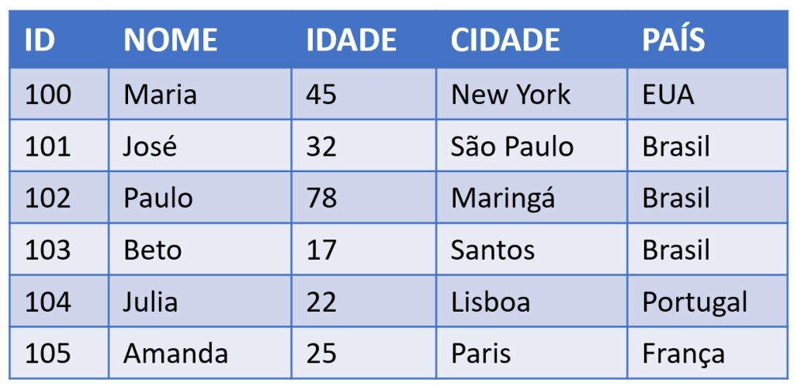
Banco de Dados Relacional Um banco de dados relacional é um banco de dados baseado em um modelo de dados relacional, no qual os dados são representados como um conjunto de relações (tabelas), e cada relação consiste em tuplas (linhas) e atributos (colunas). - SILBERSCHATZ, Abraham; KORTH, Henry F.; SUDARSHAN, S. Database System Concepts. 6. ed. New York: McGraw-Hill, 2010.
Agora, alguns pontos-chave da definição de Abraham Silberschatz :
Base no modelo relacional de Codd (1970).
Dados representados em tabelas (relações).
Cada tabela é composta de tuplas (linhas) e atributos (colunas).
Integridade garantida por restrições (chaves, integridade referencial, domínio de atributos).
Manipulação feita por linguagens relacionais (álgebra relacional, cálculo relacional, SQL).
O Banco de Dados Relacional organiza as informações em tabelas bidiomensionais constituídas de linhas e colunas chamadas e essas tabelas recebem o nome de relações. Cada relação possui um campo-chave que confere identificação exclusiva a cada registro da tabela.
3.2 Modelo Matemático de um Banco de Dados
Considere um Banco de Dados para representar, com consistência Matemática os funcionários e Departamentos de uma Empresa.
3.2.1 Podemos representa-lo matemáticamente utilizando a teoria dos conjuntos

Figure 3.1: Diagrama de Montadoras, Veículos e Proprietários
3.2.1.1 Edgard F Cood explica em sua obra “A Relational Model of Data for Large Shared Data Banks” como definir uma Banco de Dados compartilhado matemáticamente
Um banco de dados relacional é um banco de dados no qual todos os dados são representados por meio de relações (matematicamente, conjuntos de tuplas), e todas as operações sobre os dados são baseadas em operadores formais do cálculo relacional e da álgebra relacional. - A Relational Model of Data for Large Shared Data Banks” (Communications of the ACM, vol. 13, n. 6, pp. 377–387, 1970).

3.2.2 Então para podemos relacionar estes dois conjuntos (Funcionários e Departamentos) utilizando a Teoria das Funções
\[ \text{Edgard Frank Codd era um matemático tradicional} \\ \text{Considere o conseito de função: } \\ f(x) = Y \\ \text{era dessa forma que ele imaginava relacionamento e } \\ \text{ garantia matemática de CONSISTÊNCIA entre } \\ \text{ elementos de 2 conjuntos de dados diferentes } \]
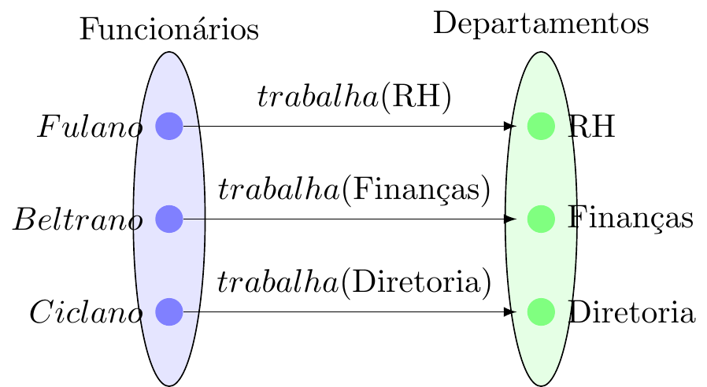
Figure 3.2: Diagrama de Montadoras, Veículos e Proprietários
Mas vai ficar faltando como representar os atributos nesse modelo (colunas das tabelas):
\[ \begin{array}{c| c | c} \textbf{ Conjunto Funcionários} & \textbf{ Relacionamento Trabalha} & \textbf{Conjunto Departamentos)} \\ \hline FULANO & \quad TRABALHA & \quad RH \\ BELTRANO & \quad TRABALHA & \quad FINANCEIRO \\ CICLANO & \quad TRABALHA & \quad DEIRETORIA \\ \hline \textbf{Total: 3 ELEMENTOS } & \textbf{ CONECTADOS } & \textbf{Total: 3 ELEMENTOS } \end{array} \]
Ainda, é necessário acrescentar algumas regras de integridade a representação;
3.3 Modelo Lógico de Banco de Dados
3.3.1 Modelo Conceitual “Entidade Relacionamento” de Banco de Dados
O Modelo Entidade-Relacionamento (MER), proposto por Peter Chen em 1976, é uma ferramenta fundamental na modelagem de dados. É um modelo de dados de alto nível que descreve a estrutura conceitual de um banco de dados. O Modelo Entidade-Relacionamento (MER) é representado graficamente através de um DER (Diagrama Entidade-Relacionamento).

É utilizado para projetar Bancos de Dados Relacionais a partir de entrevistas onde se descreve as informações que se deseja armazenar de forma consistente. Exemplo:
“Desenhe um diagrama entidade-relacionamento DER contendo as entidades funcionarios e departamentos. A entidade ”funcionários” possui os atributos ”nome” e ”CPF”. A entidade ”Departamentos” possui os atributos ”Nome” e ”sigla”. O atributo ”CPF” é chave primária da entidade ”Funcionários”. O atributo ”sigla” é chave primária da entidade ”Departamentos”. As entidades ”Funcionários” e ”Departamentos” se relacionam através de um relacionamento chamado ”Pertence”.”
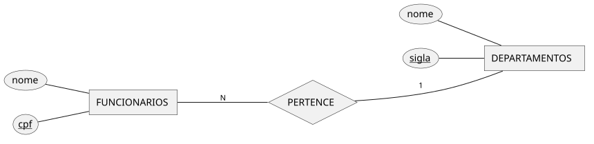
Segundo Laudon
Diagrama Entidade/Relacionamento (DER) é uma representação esquemática utilizada para entender as relações entre as tabelas de um banco de dados relacional. [[1] - LAUDON, Kenneth C.; LAUDON, Jane P. *Sistemas de informação gerenciais*. 11. ed. São Paulo: Pearson Education do Brasil, 2010. p. 180.]
3.3.2 Composição e Significado do Diagrama Entidade Relacionamento (DER)
\[ \begin{array}{c| c | c} \textbf{ NOME DO COMPONENTE} & \textbf{Representação Gráfica} & \textbf{ Liguagem Natural (texto)} \\ \hline ENTIDADE & \quad RETÂNGULO & \quad SUBSTÃNTIVO \\ ATRIBUTO & \quad ELÍPSE & \quad ADJETIVO \\ RELACIONAMENTO & \quad LOSÂNGULO & \quad VERBO \\ \hline \textbf{Total: 3 ELEMENTOS } & \textbf{ FORMA GRÁFICA } & \textbf{ FORMA MOFOLÓGICA GRAMATICAL } \end{array} \]

Figure 3.3: Diagrama de Montadoras, Veículos e Proprietários
3.4 Modelo Físico de Banco de Dados
3.4.1 Geração do modelo Físico para aplica-lo ao SGBD (Sistema de Gerenciamento de Banco de Dados):
Uma vez que o modelo conceitual seja gerado, o analista pode mapea-lo para um “modelo físico”. Aqui, cada entidade irá gerar uma tebela, cada atributo irá originar uma coluna pertinente da tabela em questão e cada relacionamento irá mapear chaves primárias e chaves forasteiras nas tabelas interrelacionadas.
\[ \begin{array}{c| c | c} \textbf{Componente Lógico} & \textbf{ Componente Físico} & \textbf{Liguagem Natural (texto)} \\ \hline ENTIDADE & \quad TABELA & \quad SUBSTÃNTIVO \\ ATRIBUTO & \quad COLUNA & \quad ADJETIVO \\ RELACIONAMENTO & \quad CHAVE-ESTRANGEIRA & \quad VERBO \\ \hline \textbf{Diagrama Lógico DER } & \textbf{ FORMA FÍSICA - SGBD } & \textbf{ FORMA MOFOLÓGICA GRAMATICAL ORIGINAL } \end{array} \]
A ferramenta que irá criar as estruturas Físicas (tabelas, colunas, chaves) dentro do Banco de Dados é o Sistema de Gerenciamento de Banco de Dados através da linguagem SQL.
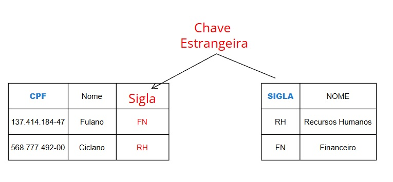
3.4.2 Interagindo com o Modelo Físico - A linguagem SQL (Structured Query Language)
A linguagem SQL foi criada nos laboratórios da IBM em 1974, como interface de manipulação ao Bando de Dados Relacional System-R , atualmente denominado IBM DB2. Os criadores foram engenheiros de sistemas que sucederam o professor Edgard Frank Codd no projeto de Banco de Dados Relacional: Donald Chamberlain e Raymond Boyce.

Donald Chamberlain - Criador da linguagem SQL nos laboratórios da IBM
|

Raymond Boyce - Criador da linguagem SQL nos laboratórios da IBM
|
A lingauem SQL é a ponte com o mundo exterior para um Sistema de Gerenciamento de Banco de Dados (SGBD). Os conjunto de comandos da linguagem SQL são divididos em 3 grandes grupos:
\[ \begin{array}{c| c | c} \textbf{GRUPO} & \textbf{ Comandos} & \textbf{Finalidade} \\ \hline Grupo \ DDL & \quad \ Data \ Definion \ Language & \quad Criar \ estruturas \ de \ dados \\ Grupo \ DML & \quad \ Data \ Manipulation \ Language & \quad Manipular \ dados \ armazenados \\ Grupo \ DCL & \quad \ Data \ Control \ Language & \quad Criar \ Regras \ para \ os \ dados \\ Grupo \ TCL & \quad \ Transaction \ Control \ Language & \quad Criar \ Transações \ para \ os \ dados \\ \hline \textbf{Subconjunto SQL } & \textbf{ Significado } & \textbf{ Conjunto Completo } \end{array} \]
Comandos exemplo:
\[ \begin{array}{c| c } \textbf{GRUPO} & \textbf{ Comandos} \\ \hline Grupo \ DDL & \quad CREATE, \quad ALTER,\quad DROP \ \ \\ Grupo \ DML & \quad SELECT, \quad INSERT, \quad UPDATE, \quad DELETE, \quad JOIN \\ Grupo \ DCL & \quad GRANT, \quad REVOKE \\ Grupo \ TCL & \quad COMMIT, \quad ROLLBACK, \quad SAVEPOINT \\ \hline \textbf{Subconjunto SQL } & \textbf{ Significado } \end{array} \]
O código abaixo escrito em Lingauem SQL padrão transfere para o modelo físico o modelo lógico anterior:

Transformando em SQL - EQUIVALENTE:
-- Exemplo testado e gerado no SGBD Postgres versão 15
-- Tabela Funcionários
CREATE TABLE IF NOT EXISTS "public".funcionarios
(
cpf bigint NOT NULL,
nome varchar(200)
);
-- Tabela Departamentos
CREATE TABLE IF NOT EXISTS "public".departamentos
(
sigla integer NOT NULL,
nome varchar(200)
);
-- Definindo a coluna "cpf" da tabela "funcionários" como chave primária
alter table "public".funcionarios add constraint "chave_primaria_funcionarios" primary key (cpf);
-- Definindo a coluna "sigla"" da tabela "departamentos" como chave primária
alter table "public".departamentos add constraint "chave_primaria_departamentos" primary key (sigla);
-- Gerando a integridade referêncial
-- Importando a chave primária da tabela "departamentos" como "chave estrangeira"
-- na tabela "funcionários"
-- primeiro adiciona-se a coluna estrageira "sigla" que é coluna originalmente
-- pertencente a tabela departamentos
alter table "public".funcionarios add column sigla integer;
-- finalmente conecte a coluna sigla a chave primária da tabela "departamento"
-- criando então uma chave estrageira na tabela "funcionários".
alter table "public".funcionarios add constraint "Chave_estrangeira_Departamento_funcionarios" foreign key (sigla) references "public".departamentos(sigla);3.5 EXEMPLO: REVENDA DE VEÍCULOS MULTI-MARCAS
Uma revenda de veículos multimarcas deseja informatizar seu negócio e precisa de um banco de dados que registre informações sobre veículos, fabricantes e clientes. Cada veículo deve ter código de identificação, modelo, ano de fabricação, cor, preço e chassi. Todo veículo pertence a um fabricante. O fabricante é identificado por um código e deve ter armazenados seu nome e país de origem. A revenda vende veículos para clientes, e cada venda deve registrar a data, o valor da negociação e a forma de pagamento. Um cliente pode comprar mais de um veículo, mas cada veículo só pode ser vendido uma vez. Cada cliente é identificado por um código e deve ter armazenados seu nome, CPF/CNPJ, telefone e endereço.
3.5.1 Passo 1 - Visualizando matemáticamente os dados:
Vejamos como ficaria representar matemáticamente o enunciado acima:
Teoria dos Conjuntos - Ajudaria a organizar e agrupar os dados em conjuntos;
Teoria das Funções - A idéia era fornecer um mecanismo de consistência aos dados de conjuntos diferentes relacionados. Por exemplo, haveria uma função que mapeasse um um elemento do conjunto
veículoa outro elemento do conjuntomontadora.
3.5.1.1 Representação Matemática em Conjuntos e seus Elementos :
Vamos visualizar gráficamente os conjuntos de Marcas, modelos e proprietários :

Figure 3.4: Diagrama de Montadoras, Veículos e Proprietários
3.5.1.2 Gerando os Relacionamentos “Matemáticamente” - (Teoria das Funções, Domínios e Imagens):
Vamos visualizar gráficamente os relacionamentos entre os lementos dos conjuntos Marcas, modelos e proprietários :

Figure 3.5: Diagrama de Montadoras, Veículos e Proprietários
A limitação desta representação gráfica logo fica evidente: por mais que na forma matemática se consiga representar os elementos dos conjuntos e o relacionamento entre eles, a representação não consegue representar os diferentes atributos (características) que os elementos dos conjuntos compartilham.
3.5.2 Modelo Lógico: Modelo Entidade Relacionamento
Vamos agora converter a representação matemática para uma representação lógica utilizando o modelo M.E.R. (modelo entidade-relacionamento ) proposto pelo professor Peter Chen
3.5.2.1 Modelo Entidade Relacionamento
O modelo Entidade Relacionamento consistem em traduzir elementos morfológicos da gramática da língua portuguesa em um texto para um modelo de Banco de dados utilizando a com a seguinte regra de montagem:
| Classe morfológica da palavra | CORRESPONDÊNCIA NO MODELO MATEMÁTICO | CORRESPONDÊNCIA NO MODELO LÓGICO | CORRESPONDÊNCIA NO MODELO FÍSICO-RELACIONAL |
Substantivos |
CONJUNTOS |
ENTIDADES |
TABELAS |
Adjetivos |
N/A | ATRIBUTO |
COLUNAS |
Verbos |
Idéia de “funções y=f(x)” | RELACIONAMENTOS |
CHAVE ESTRANGEIRA |
Tomando como exemplo a revenda de carros:
| Classe morfológica da palavra | |
Substantivos |
VEÍCULOS, FABRICANTES, CLIENTES |
Adjetivos |
Referentes a veículos: Referentes a fabricante: Referentes a cliente: |
Verbos |
Fabricante - clinte - |
3.5.2.2 Modelo Entidade Relacionamento - representação gráfica
| Classe morfológica da palavra | REPRESENTAÇÃO GRÁFICA |
Substantivos |
RETÂNGULOS |
Adjetivos |
ELIPSES |
Verbos |
LOSÂNGULOS |
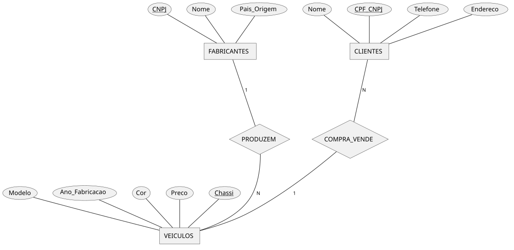
-- ================================================
-- 1) TRANSFORME AS ENTIDADES E ATRIBUTOS EM
-- TABELAS E COLUNAS
-- ================================================
CREATE TABLE fabricantes
(
codigo_fabricante INTEGER NOT NULL,
nome VARCHAR(100) NOT NULL,
pais_origem VARCHAR(60) NOT NULL
);
CREATE TABLE clientes
(
codigo_cliente INTEGER NOT NULL,
nome VARCHAR(120) NOT NULL,
cpf_cnpj VARCHAR(20) NOT NULL UNIQUE,
telefone VARCHAR(30),
endereco TEXT
);
CREATE TABLE veiculos
(
codigo_veiculo INTEGER NOT NULL,
modelo VARCHAR(100) NOT NULL,
ano_fabricacao INTEGER NOT NULL,
cor VARCHAR(40),
preco NUMERIC(12,2) NOT NULL,
chassi VARCHAR(30) UNIQUE NOT NULL
);
CREATE TABLE vendas
(
codigo_venda INTEGER NOT NULL,
data_venda DATE NOT NULL,
valor_negociado NUMERIC(12,2) NOT NULL,
forma_pagamento VARCHAR(50) NOT NULL
);
-- ================================================
-- 2) TRANSFORME OS ATRIBUTOS CHAVE PRIMÁRIA
-- EM CHAVES-PRIMÁRIAS DAS TABELAS
-- ================================================
ALTER TABLE fabricantes ADD CONSTRAINT chave-primaria_fabricante PRIMARY KEY (codigo_fabricante);
ALTER TABLE clientes ADD CONSTRAINT chave-primaria_cliente PRIMARY KEY (codigo_cliente);
ALTER TABLE veiculos ADD CONSTRAINT chave-primaria_veiculo PRIMARY KEY (codigo_veiculo);
ALTER TABLE vendas ADD CONSTRAINT chave-primaria_venda PRIMARY KEY (codigo_venda);
-- ================================================
-- 3) ADICIONAR NAS TABELAS AS COLUNAS EXTRAS
-- QUE VÃO RECEBER AS CHAVES ESTRANGEIRAS
-- ================================================
-- adicione uma coluna que irá acomodar a chave primária da tabela fabricantes como chave estrangeira
ALTER TABLE veiculos add cloumn codigo_fabricante INTEGER NOT NULL;
-- adicione uma coluna que irá acomodar a chave primária da tabela clientes como chave estrangeira
ALTER TABLE vendas add cloumn codigo_cliente INTEGER NOT NULL;
-- adicione uma coluna que irá acomodar a chave primária da tabela veículos como chave estrangeira
ALTER TABLE vendas add cloumn codigo_veiculo INTEGER NOT NULL UNIQUE;
-- ================================================
-- 3) CRIE AS CHAVES ESTRANGEIRAS QUE FAZEM A LIGAÇÃO
-- DAS TABELAS "LADO N" DO RELACIONAMENTO NO
-- DIAGRAMA ENTIDADE-RELACIONAMENTO COM AS
-- COLUNAS DO LADO 1
-- ================================================
-- utilizando chave estrangeira, faça esta tabela veículos referenciar a tabela fabricantes
ALTER TABLE veiculos
ADD CONSTRAINT chave-estrageira_veiculo_fabricante
FOREIGN KEY (codigo_fabricante)
REFERENCES fabricantes (codigo_fabricante)
ON UPDATE CASCADE
ON DELETE RESTRICT;
-- utilizando chave estrangeira, faça esta tabela vendas referenciar a tabela clientes
ALTER TABLE vendas
ADD CONSTRAINT chave-estrageira_venda_cliente
FOREIGN KEY (codigo_cliente)
REFERENCES clientes (codigo_cliente)
ON UPDATE CASCADE
ON DELETE RESTRICT;
-- utilizando chave estrangeira, faça esta tabela vendas referenciar a tabela veículos
ALTER TABLE vendas
ADD CONSTRAINT chave-estrageira_venda_veiculo
FOREIGN KEY (codigo_veiculo)
REFERENCES veiculos (codigo_veiculo)
ON UPDATE CASCADE
ON DELETE RESTRICT;3.6 VERBOS: Relacionamentos e Cardinalidade
A cardinalidade define quantas ocorrências de uma entidade podem estar associadas a ocorrências de outra entidade em um relacionamento.
Ela é fundamental para entender as regras de negócio do banco de dados e deve estar sempre representada no Diagrama Entidade-Relacionamento (DER).
3.6.1 🔹 Tipos principais de cardinalidade
- Um para Um (1:1)
- Um para Muitos (1:N)
- Muitos para Muitos (N:N)
A seguir, vamos detalhar cada caso.
3.6.2 1. Relacionamento 1:1 (Um para Um)
Um exemplo clássico:
- Cada MARIDO possui uma única ESPOSA.
- Cada ESPOSA pertence a um único MARIDO.
3.6.3 Relacionamento 1:N (Um para Muitos)
Exemplo:
Um Cliente pode fazer muitos Pedidos.
Mas cada Pedido só pode pertencer a um Cliente.

3.7 Entidade Dominante e Entidade Subordinada
No Modelo Entidade-Relacionamento (MER), algumas entidades só existem dependendo da existência de outra.
Nesses casos, usamos os conceitos de Entidade Dominante e Entidade Subordinada.
3.7.1 Definições:
Entidade Dominante (ou Forte):
É uma entidade que existe por si só, sem depender de nenhuma outra.
Ex.: Cliente, Produto, Funcionário.Entidade Subordinada (ou Fraca):
É uma entidade que depende de outra para existir.
Ela não possui chave primária própria completa e precisa da chave da entidade dominante.
Ex.: ItemPedido, Dependente, Parcela.
A entidade subordinada é representada por um losango duplo (relacionamento identificador) em algumas notações, ou simplesmente destacada como entidade fraca.
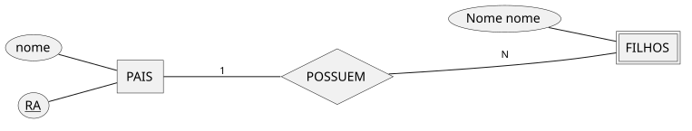
Outro Exemplo:
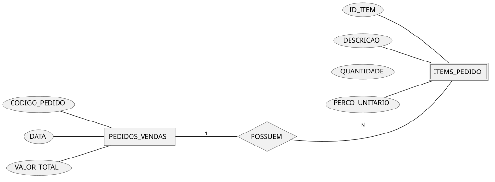
3.8 CARDINALIDADE DO MODELO LÓGICO E A CRIAÇÃO DE CHAVES ESTRANGEIRAS NO MODELO FÍSICO-RELACIONAL
Vai ser a cardinalidade que irá ditar em quais tabelas criaremos chaves estrangeiras.
3.9 Referências
CHEN, Peter (1990). Gerenciando Banco de Dados. A Abordagem Entidade-Relacionamento para Projeto Lógico. São Paulo: McGraw-Hill. 80 páginas. ISBN 0-07-460575-5
DATE, C. J. An Introduction to Database Systems. 8. ed. Boston: Addison-Wesley, 2003.
SILBERSCHATZ, Abraham; KORTH, Henry F.; SUDARSHAN, S. Database System Concepts. 6. ed. New York: McGraw-Hill, 2010.
CODD, E. F. A Relational Model of Data for Large Shared Data Banks. Communications of the ACM, New York, v. 13, n. 6, p. 377–387, 1970.
3.10 Exercícios RESOLVIDOS
| Exercício 1 — Universidade |
|---|
| Considere uma Universidade que possui vários Cursos. Cada curso tem um nome, uma duração em semestres e um coordenador. A universidade possui Professores, cada um com um nome, título e CPF. Um professor pode ministrar várias disciplinas, e cada disciplina pertence a um único curso. |
|
|
|
|
3.10.0.1 Passo #1 -
Identificar SUBSTANTIVOS no contexto; identificar os ADJETIVOS pertinentes a cada SUBSTANTIVO; identificar os VERBOS de relação entre os substantivos.
Substantivos do contexto: leve-os ao plural |
Adjetivos |
Verbos |
|---|---|---|
UNIVERSIDADE -> UNIVERSIDADES |
|
universidade POSSUI (vários) cursos |
CURSO -> CURSOS |
|
cursos são POSSUÍDOS por (vários) universidades |
PROFESSOR -> PROFESSORES |
|
universidade professor |
DISCIPLINA -> DISCIPLINAS |
|
disciplina disciplina |
3.10.0.2 Passo #2
Criar o MODELO ENTIDADE RELACIONAMENTO (M.E.R.) - Converter SUBSTANTIVO em ENTIDADES; converter ADJETIVOS em ATRIBUTOS e converter VERBOS em RELACIONAMENTOS.
ENTIDADES identificadas:
UNIVERSIDADES,CURSOS,PROFESSORESeDISCIPLINASATRIBUTOS identificados: UNIVERSIDADES [ nome,cnpj ] ; CURSOS [ nome, duração, coordenador, codigo_curso] ; PROFESSORES [ cpf, nome e título] ; DISCIPLINAS [nome e codigo_disciplina]
RELACIONAMENTOS: [universidade-
POSSUI-curso] ; [universidade-POSSUI-professores]; [professor-MINISTRA-disciplina] ; [disciplina-PERTENCE-curso]
3.10.0.3 Passo #3
Criar um DIAGRAMA ENTIDADE-RELACIONAMENTO (D.E.R.) com as informações levantadas:
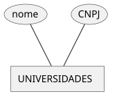
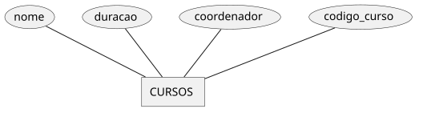
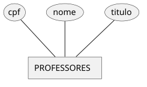
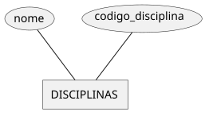
3.10.0.4 Passo #4
Identificar os Relacionamentos:
- [universidade-
POSSUI-curso] ; [universidade-POSSUI-professores]; [professor-MINISTRA-disciplina] ; [disciplina-PERTENCE-curso]
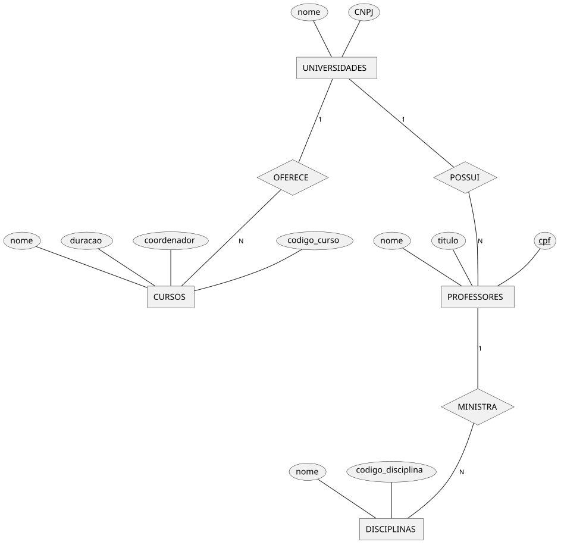
3.10.0.5 Passo #5 - Crie o código SQL referente ao diagrama que você desenhou:
/* =========================================================
Passo 1️- CRIAR TABELAS (somente colunas, sem PK nem FK)
========================================================= */
CREATE TABLE UNIVERSIDADES
(
nome VARCHAR(255),
CNPJ VARCHAR(14)
);
CREATE TABLE CURSOS
(
nome VARCHAR(255),
duracao INT,
coordenador VARCHAR(255),
codigo_curso INTEGER
);
CREATE TABLE PROFESSORES
(
cpf VARCHAR(11),
nome VARCHAR(255),
titulo VARCHAR(255)
);
CREATE TABLE DISCIPLINAS
(
nome VARCHAR(255),
codigo_disciplina INTEGER
);
/* =========================================================
Passo 2- ADICIONAR CHAVES PRIMÁRIAS
========================================================= */
ALTER TABLE UNIVERSIDADES ADD PRIMARY KEY (CNPJ);
ALTER TABLE CURSOS ADD PRIMARY KEY (codigo_curso);
ALTER TABLE PROFESSORES ADD PRIMARY KEY (cpf);
ALTER TABLE DISCIPLINAS ADD PRIMARY KEY (codigo_disciplina);
/* =========================================================
Passo 3- CRIAR COLUNAS PARA FUTURAS CHAVES ESTRANGEIRAS
-- Sempre no lado N de cada relacionamento
========================================================= */
-- UNIVERSIDADES (1) —— (N) CURSOS → CURSOS precisa de CNPJ
ALTER TABLE CURSOS ADD COLUMN CNPJ VARCHAR(14);
-- UNIVERSIDADES (1) —— (N) PROFESSORES → PROFESSORES precisa de CNPJ
ALTER TABLE PROFESSORES ADD COLUMN CNPJ VARCHAR(14);
-- PROFESSORES (1) —— (N) DISCIPLINAS → DISCIPLINAS precisa de cpf
ALTER TABLE DISCIPLINAS ADD COLUMN cpf VARCHAR(11);
/* =========================================================
Passo 4- CRIAR AS CHAVES ESTRANGEIRAS
========================================================= */
ALTER TABLE CURSOS ADD CONSTRAINT fk_cursos_universidade FOREIGN KEY (CNPJ) REFERENCES UNIVERSIDADES (CNPJ);
ALTER TABLE PROFESSORES ADD CONSTRAINT fk_professores_universidade FOREIGN KEY (CNPJ) REFERENCES UNIVERSIDADES (CNPJ);
ALTER TABLE DISCIPLINAS ADD CONSTRAINT fk_disciplinas_professor FOREIGN KEY (cpf) REFERENCES PROFESSORES (cpf);| Exercício 2 — Um Projeto de e-commerce |
|---|
| Um Cliente faz Pedidos em um sistema de e-commerce. Cada cliente tem um nome, endereço e telefone. Os pedidos possuem uma data, um valor total e podem conter vários Produtos. Cada produto tem um nome, uma descrição e um preço. |
|
|
|
|
3.10.0.6 Passo #1 -
Identificar SUBSTANTIVOS no contexto; identificar os ADJETIVOS pertinentes a cada SUBSTANTIVO; identificar os VERBOS de relação entre os substantivos.
Substantivos do contexto: leve-os ao plural |
Adjetivos |
Verbos |
|---|---|---|
CLIENTE -> CLIENTES |
|
(vários) clientes PEDEM (vários) produtos |
PEDIDO -> PEDIDO NÃO É SUBSTABNTIVO, MAS SIM O PARTICÍPIO PASSADO DO VERBO PEDIR. (PEDIR É VERBO !!!) |
|
(vários) clientes PEDEM (vários) produtos |
PRODUTO -> PRODUTOS |
|
(vários) produtos são PEDidos por (vários) clientes |
3.10.0.7 Passo #2
Criar o MODELO ENTIDADE RELACIONAMENTO (M.E.R.) - Converter SUBSTANTIVO em ENTIDADES; converter ADJETIVOS em ATRIBUTOS e converter VERBOS em RELACIONAMENTOS.
Normalmente apenas as ENTIDADES levam atributos. Quando aparece um relacionamento N-N entre duas entidades, também podem aparecer atributos atrelados aos relacionamentos (como é o caso de PEDIDO aqui).
ENTIDADES identificadas:
CLIENTES,PRODUTOSATRIBUTOS identificados: CLIENTES [ nome, endereco, telefone, cpf] ; PRODUTOS [ nome, descricao, preco, cod_produto] ; PEDIDO[data, valor_total]
RELACIONAMENTOS: [cliente-
PEDE-produto] ; [produto-PEDIDO-cliente];
3.10.0.8 Passo #3
Criar um DIAGRAMA ENTIDADE-RELACIONAMENTO (D.E.R.) com as informações levantadas:
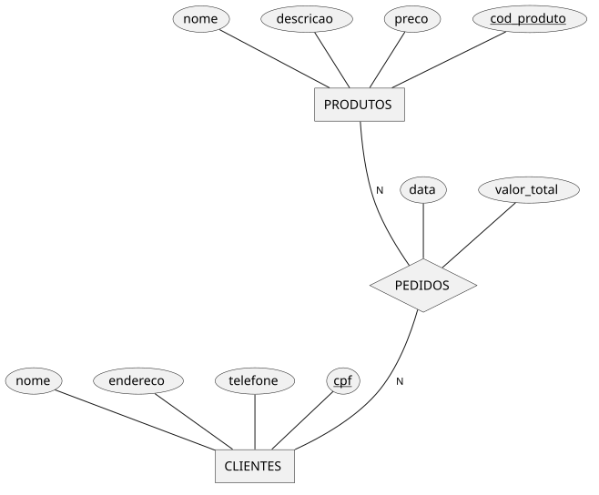
3.10.0.9 Passo #5 - Crie o código SQL referente ao diagrama que você desenhou:
-- CRIAR AS TABELAS
CREATE TABLE Cliente
(
id_cliente INT,
nome VARCHAR(255)
);
CREATE TABLE CPF
(
numero_cpf CHAR(11)
);
-- ADICIONAR AS CHAVES PRIMÁRIAS
ALTER TABLE Cliente ADD PRIMARY KEY (id_cliente);
ALTER TABLE CPF ADD PRIMARY KEY (numero_cpf);
-- O relacionamento é 1:1. Podemos escolher um dos lados para armazenar a chave.
-- Aqui vamos seguir o diagrama, colocando a chave estrangeira de CPF em Cliente.
ALTER TABLE Cliente ADD COLUMN numero_cpf CHAR(11);
-- CRIAR AS CHAVES ESTRANGEIRAS
ALTER TABLE Cliente ADD CONSTRAINT fk_cliente_cpf FOREIGN KEY (numero_cpf) REFERENCES CPF (numero_cpf);| Exercício 3 — Hospital |
|---|
| Um Hospital registra Pacientes, cada um com nome, idade, endereço e telefone. Os pacientes podem realizar várias Consultas com Médicos. Cada médico possui um CRM, um nome e uma especialidade. Durante a consulta, o médico pode prescrever Receitas, que possuem medicação e dosagem. |
|
|
|
|
3.10.0.10 Passo #1 -
Identificar SUBSTANTIVOS no contexto; identificar os ADJETIVOS pertinentes a cada SUBSTANTIVO; identificar os VERBOS de relação entre os substantivos.
Substantivos do contexto: leve-os ao plural |
Adjetivos |
Verbos |
|---|---|---|
HOSPITAL -> HOSPITAIS |
|
(explícito) hospital (implícito) hospital |
PACIENTE -> PACIENTES |
|
pacientes são (vários) pacientes (vários) pacientes |
MÉDICO -> MEDICOS |
|
(vários) médico(s) (vários) médico(s) |
RECEITA ?? -> RECEITAR é VERBO |
|
médico (vários) paciente(s) |
CONSULTA ?? -> CONSULTAR é VERBO |
|
(vários) pacientes(s) CONSULTA(M) (vários) médico(s) |
3.10.0.11 Passo #2
Criar o MODELO ENTIDADE RELACIONAMENTO (M.E.R.) - Converter SUBSTANTIVO em ENTIDADES; converter ADJETIVOS em ATRIBUTOS e converter VERBOS em RELACIONAMENTOS.
ENTIDADES identificadas:
HOSPITAIS,PACIENTES,MEDICOSATRIBUTOS identificados: HOSPITAIS [ nome,cnpj ] ; PACIENTES [ nome, idade, endereco, telefone, cpf] ; MEDICOS [ crm, nome e especialidade] ;
RELACIONAMENTOS: [medico-
consulta-paciente] ; [medico-receita-paciente]; [hospital-registra-paciente] ; [hospital-POSSUI-medicos]
3.10.0.12 Passo #3
Criar um DIAGRAMA ENTIDADE-RELACIONAMENTO (D.E.R.) com as informações levantadas:
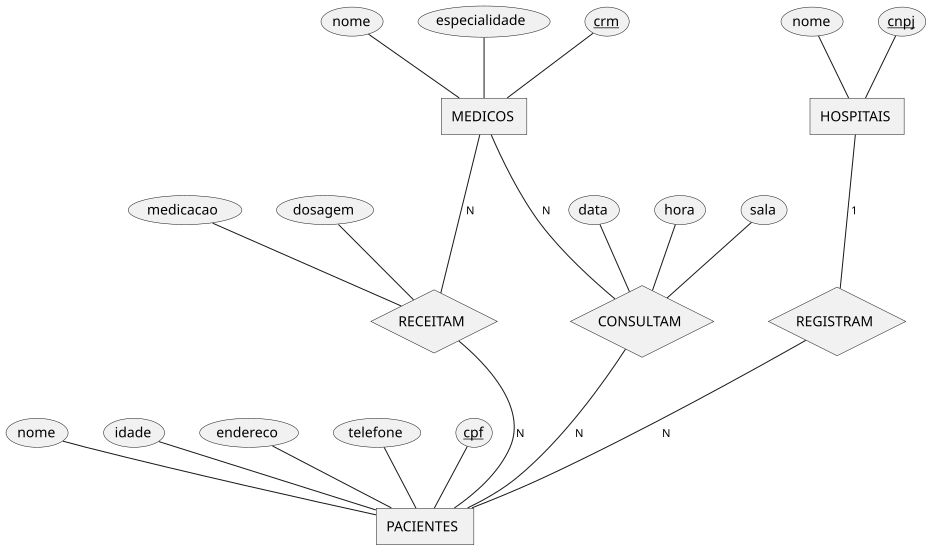
3.10.0.13 Passo #5 - Faça o código SQL do diagrama acima
/* =========================================================
Passo 1- TABELAS (apenas colunas, sem PK ou FK)
========================================================= */
CREATE TABLE HOSPITAIS
(
nome VARCHAR(255),
cnpj CHAR(14)
);
CREATE TABLE PACIENTES
(
nome VARCHAR(255),
idade INT,
endereco VARCHAR(255),
telefone VARCHAR(20),
cpf CHAR(11)
);
CREATE TABLE MEDICOS
(
nome VARCHAR(255),
especialidade VARCHAR(255),
crm CHAR(15)
);
/* As próximas tabelas representam os relacionamentos N:M
com atributos próprios (tabelas de junção) */
CREATE TABLE REGISTRAM
(
-- sem colunas de FK por enquanto
);
CREATE TABLE CONSULTAM
(
data_consulta DATE,
hora TIME,
sala VARCHAR(50)
);
CREATE TABLE RECEITAM
(
medicacao VARCHAR(255),
dosagem VARCHAR(100)
);
/* =========================================================
Passo 2- ADICIONAR CHAVES PRIMÁRIAS
========================================================= */
ALTER TABLE HOSPITAIS ADD PRIMARY KEY (cnpj);
ALTER TABLE PACIENTES ADD PRIMARY KEY (cpf);
ALTER TABLE MEDICOS ADD PRIMARY KEY (crm);
/* Para tabelas de relacionamento com atributos, a PK será composta
(as FKs a serem criadas formarão a chave primária). Faremos isso depois
de adicionar as colunas de FK. */
/* =========================================================
Passo 3- CRIAR COLUNAS PARA FUTURAS CHAVES ESTRANGEIRAS
========================================================= */
-- REGISTRAM: HOSPITAIS (1) —— (N) PACIENTES
ALTER TABLE REGISTRAM ADD COLUMN cnpj CHAR(14), ADD COLUMN cpf CHAR(11);
-- CONSULTAM: MEDICOS (N) —— (N) PACIENTES
ALTER TABLE CONSULTAM ADD COLUMN crm CHAR(15), ADD COLUMN cpf CHAR(11);
-- RECEITAM: MEDICOS (N) —— (N) PACIENTES
ALTER TABLE RECEITAM ADD COLUMN crm CHAR(15), ADD COLUMN cpf CHAR(11);
/* =========================================================
Passo 4- CRIAR CHAVES ESTRANGEIRAS
========================================================= */
ALTER TABLE REGISTRAM
ADD CONSTRAINT fk_registram_hospitais
FOREIGN KEY (cnpj)
REFERENCES HOSPITAIS (cnpj),
ADD CONSTRAINT fk_registram_pacientes
FOREIGN KEY (cpf)
REFERENCES PACIENTES (cpf);
ALTER TABLE CONSULTAM
ADD CONSTRAINT fk_consultam_medicos
FOREIGN KEY (crm)
REFERENCES MEDICOS (crm),
ADD CONSTRAINT fk_consultam_pacientes
FOREIGN KEY (cpf)
REFERENCES PACIENTES (cpf);
ALTER TABLE RECEITAM
ADD CONSTRAINT fk_receitam_medicos
FOREIGN KEY (crm)
REFERENCES MEDICOS (crm),
ADD CONSTRAINT fk_receitam_pacientes
FOREIGN KEY (cpf)
REFERENCES PACIENTES (cpf);
/* Definir chaves primárias compostas para tabelas de relacionamento */
ALTER TABLE REGISTRAM ADD PRIMARY KEY (cnpj, cpf);
ALTER TABLE CONSULTAM ADD PRIMARY KEY (crm, cpf, data_consulta, hora);
ALTER TABLE RECEITAM ADD PRIMARY KEY (crm, cpf, medicacao);3.10.2 📝 Lista de Exercícios – Modelo Entidade-Relacionamento (MER)
3.10.2.1 Exercício 1 – Cliente e CPF (1:1)
Considere um projeto de Banco de Dados.Faça a modelagem utilizando o Modelo Entidade-Relacionamento de Peter Chen (M.E.R.).
Cada Cliente possui exatamente um CPF, e cada CPF só pode estar associado a um único Cliente.
- Identifique entidades, atributos e relacionamento.
- Represente o MER com cardinalidade 1:1.

3.10.2.2 Exercício 2 – Cliente e Pedidos (1:N)
Considere um projeto de Banco de Dados.Faça a modelagem utilizando o Modelo Entidade-Relacionamento de Peter Chen (M.E.R.).
Um Cliente pode fazer vários Pedidos, mas cada Pedido pertence a apenas um Cliente.
- Liste as entidades e atributos.
- Defina o relacionamento e a cardinalidade.
- Monte o DER.
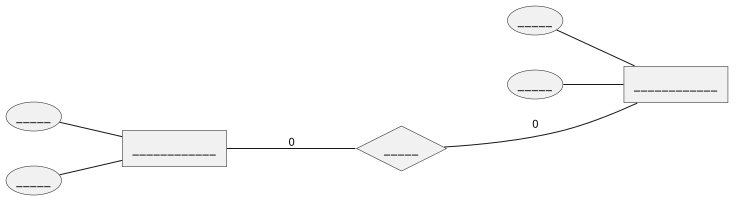
3.10.2.3 Exercício 3 – Alunos e Disciplinas (N:M)
Considere um projeto de Banco de Dados.Faça a modelagem utilizando o Modelo Entidade-Relacionamento de Peter Chen (M.E.R.).
Um Aluno pode se matricular em várias Disciplinas, e cada Disciplina pode ter vários Alunos.
- Identifique entidades e atributos. - Qual entidade associativa deve ser criada? - Desenhe o DER com a entidade associativa.

3.10.2.4 Exercício 4 – Funcionário e Dependentes (Entidade Fraca)
Considere um projeto de Banco de Dados.Faça a modelagem utilizando o Modelo Entidade-Relacionamento de Peter Chen (M.E.R.).
Cada Funcionário pode ter vários Dependentes. Um Dependente não existe sem um Funcionário.
- Identifique a entidade forte e a entidade fraca.
- Defina atributos e chaves.
- Monte o DER indicando a dependência existencial.

3.10.2.5 Exercício 5 – Pedido e Itens de Pedido (Entidade Associativa + Fraca)
Considere um projeto de Banco de Dados.Faça a modelagem utilizando o Modelo Entidade-Relacionamento de Peter Chen (M.E.R.).
Um Pedido contém vários Itens, mas cada Item está sempre vinculado a apenas um Pedido.
- Qual entidade é dominante e qual é subordinada?
- Identifique atributos das duas entidades.
- Represente o DER com cardinalidade 1:N.

3.10.2.6 Exercício 6 – Médicos e Consultas (1:N)
Considere um projeto de Banco de Dados.Faça a modelagem utilizando o Modelo Entidade-Relacionamento de Peter Chen (M.E.R.).
Um Médico pode realizar várias Consultas, mas cada Consulta está associada a apenas um Médico.
- Identifique entidades e atributos.
- Desenhe o DER.
- Indique as cardinalidades.

3.10.2.7 Exercício 7 – Professor e Departamento (1:1)
Considere um projeto de Banco de Dados.Faça a modelagem utilizando o Modelo Entidade-Relacionamento de Peter Chen (M.E.R.).
Cada Professor dirige apenas um Departamento, e cada Departamento tem apenas um Professor responsável.
- Identifique entidades, atributos e relacionamento.
- Defina cardinalidade 1:1 no DER.

3.10.2.8 Exercício 8 – Livros e Autores (N:M)
Considere um projeto de Banco de Dados.Faça a modelagem utilizando o Modelo Entidade-Relacionamento de Peter Chen (M.E.R.).
Um Livro pode ter vários Autores, e cada Autor pode escrever vários Livros.
- Identifique as entidades e atributos.
- Qual entidade associativa deve ser criada?
- Monte o DER em notação conceitual.

3.10.2.9 Exercício 9 – Biblioteca (Entidades Fortes e Fracas)
Considere um projeto de Banco de Dados.Faça a modelagem utilizando o Modelo Entidade-Relacionamento de Peter Chen (M.E.R.).
Um Livro pode ter vários Exemplares. Um Exemplar só existe se estiver associado a um Livro.
- Identifique entidades fortes e fracas.
- Defina atributos (Livro: título, ano; Exemplar: código_exemplar, status).
- Monte o DER com a dependência existencial.
3.10.2.10 Exercício 10 – Empresa, Funcionário e Projeto (Misto 1:N e N:M)
Considere um projeto de Banco de Dados.Faça a modelagem utilizando o Modelo Entidade-Relacionamento de Peter Chen (M.E.R.).
- Uma Empresa possui vários Funcionários.
- Cada Funcionário pode participar de vários Projetos, e cada Projeto pode ter vários Funcionários.
- Identifique todas as entidades, atributos e relacionamentos.
- Determine cardinalidades corretas (Empresa–Funcionário 1:N, Funcionário–Projeto N:M).
- Crie o DER completo.
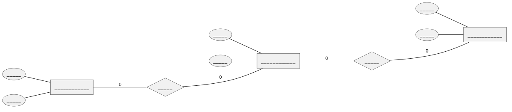
3.10.3 Respostas dos Exercícios:
3.10.3.1 Exercício #1
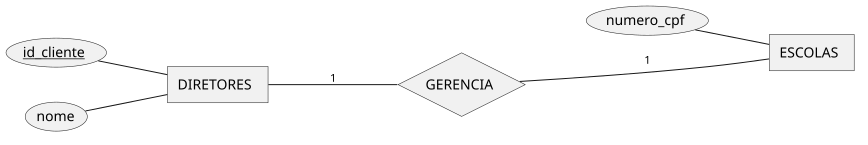
3.10.3.1.1 Exercício 1 - SQL referênte ao diagrama anterior
/* =========================================================
TRANSFORMA AS ENTIDADES EM TABELAS E ATRIBUTOS EM COLUNAS
========================================================= */
CREATE TABLE CLIENTES
(
id_cliente INTEGER,
nome VARCHAR(255)
);
CREATE TABLE CPFS
(
numero_cpf CHAR(11)
);
/* =========================================================
Definir chaves primárias
========================================================= */
ALTER TABLE CLIENTES ADD PRIMARY KEY (id_cliente);
ALTER TABLE CPFS ADD PRIMARY KEY (numero_cpf);
/* =========================================================
Criar coluna para futura chave estrangeira
========================================================= */
-- Relacionamento 1:1 (um cliente possui um CPF)
-- Vamos colocar a FK na tabela CLIENTES
ALTER TABLE CLIENTES ADD COLUMN numero_cpf CHAR(11);
/* =========================================================
Criar chave estrangeira
========================================================= */
ALTER TABLE CLIENTES ADD CONSTRAINT fk_clientes_cpfs FOREIGN KEY (numero_cpf) EFERENCES CPFS (numero_cpf);3.10.3.2 Exercício #2
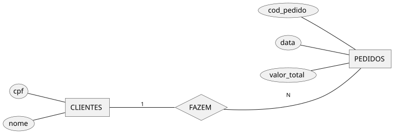
3.10.3.2.1 Exercício 2 - SQL referênte ao diagrama anterior
/* =========================================================
Criar tabelas (sem PK ou FK)
========================================================= */
CREATE TABLE CLIENTES
(
cpf CHAR(11),
nome VARCHAR(255)
);
CREATE TABLE PEDIDOS
(
cod_pedido INT,
data DATE,
valor_total DECIMAL(10,2)
);
/* =========================================================
Definir chaves primárias
========================================================= */
ALTER TABLE CLIENTES ADD PRIMARY KEY (cpf);
ALTER TABLE PEDIDOS ADD PRIMARY KEY (cod_pedido);
/* =========================================================
Criar coluna para futura chave estrangeira
========================================================= */
-- Relacionamento CLIENTES 1:N PEDIDOS
ALTER TABLE PEDIDOS ADD COLUMN cpf_cliente CHAR(11);
/* =========================================================
Criar chave estrangeira
========================================================= */
ALTER TABLE PEDIDOS ADD CONSTRAINT fk_pedidos_clientes FOREIGN KEY (cpf_cliente) REFERENCES CLIENTES (cpf);3.10.3.3 Exercício #3
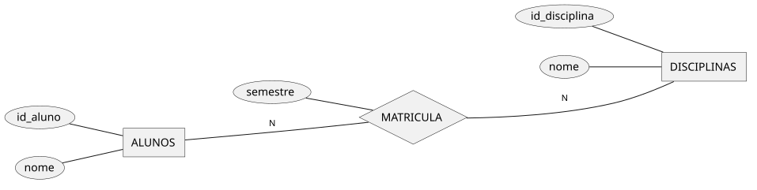
3.10.3.3.1 Exercício 3 - SQL referênte ao diagrama anterior
/* =========================================================
Criar tabelas (sem PK ou FK)
========================================================= */
CREATE TABLE ALUNOS
(
id_aluno INT,
nome VARCHAR(255)
);
CREATE TABLE DISCIPLINAS
(
id_disciplina INT,
nome VARCHAR(255)
);
/* Tabela para o relacionamento N:M */
CREATE TABLE MATRICULA
(
semestre VARCHAR(10)
);
/* =========================================================
Definir chaves primárias
========================================================= */
ALTER TABLE ALUNOS ADD PRIMARY KEY (id_aluno);
ALTER TABLE DISCIPLINAS ADD PRIMARY KEY (id_disciplina);
/* A PK da tabela MATRICULA será composta pelas FKs */
-- Definiremos depois de criar as colunas de FK
/* =========================================================
Criar colunas para futuras chaves estrangeiras (lado N)
========================================================= */
ALTER TABLE MATRICULA ADD COLUMN id_aluno INT, ADD COLUMN id_disciplina INT;
/* =========================================================
Criar chaves estrangeiras
========================================================= */
ALTER TABLE MATRICULA ADD CONSTRAINT fk_matricula_aluno FOREIGN KEY (id_aluno) REFERENCES ALUNOS (id_aluno);
ALTER TABLE MATRICULA ADD CONSTRAINT fk_matricula_disciplina FOREIGN KEY (id_disciplina) REFERENCES DISCIPLINAS (id_disciplina);
/* =========================================================
Definir chave primária composta da tabela MATRICULA
========================================================= */
ALTER TABLE MATRICULA ADD PRIMARY KEY (id_aluno, id_disciplina);3.10.3.4 Exercício #4
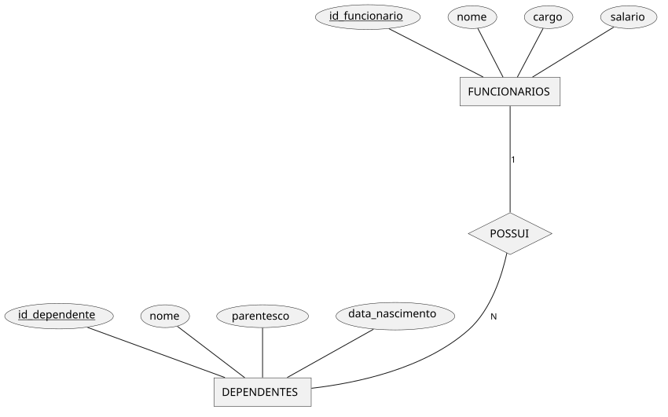
3.10.3.4.1 Exercício 4 - SQL referênte ao diagrama anterior
/* =========================================================
Criar tabelas (sem PK ou FK)
========================================================= */
CREATE TABLE FUNCIONARIOS
(
id_funcionario INT,
nome VARCHAR(255),
cargo VARCHAR(100),
salario DECIMAL(10,2)
);
CREATE TABLE DEPENDENTES
(
id_dependente INT,
nome VARCHAR(255),
parentesco VARCHAR(50),
data_nascimento DATE
);
/* =========================================================
Definir chaves primárias
========================================================= */
ALTER TABLE FUNCIONARIOS ADD PRIMARY KEY (id_funcionario);
ALTER TABLE DEPENDENTES ADD PRIMARY KEY (id_dependente);
/* =========================================================
Criar coluna para futura chave estrangeira
========================================================= */
-- Relacionamento FUNCIONARIOS 1:N DEPENDENTES
ALTER TABLE DEPENDENTES ADD COLUMN id_funcionario INT;
/* =========================================================
Criar chave estrangeira
========================================================= */
ALTER TABLE DEPENDENTES ADD CONSTRAINT fk_dependentes_funcionarios FOREIGN KEY (id_funcionario) REFERENCES FUNCIONARIOS (id_funcionario);3.10.3.5 Exercício #5
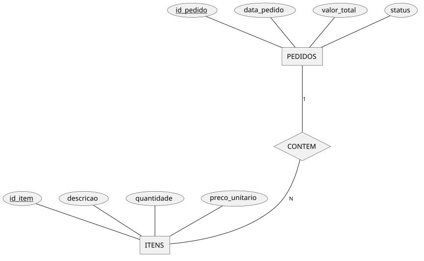
3.10.3.5.1 Exercício 5 - SQL referênte ao diagrama anterior
/* =========================================================
Criar tabelas (sem PK ou FK)
========================================================= */
CREATE TABLE PEDIDOS
(
id_pedido INT,
data_pedido DATE,
valor_total DECIMAL(10,2),
status VARCHAR(50)
);
CREATE TABLE ITENS
(
id_item INT,
descricao VARCHAR(255),
quantidade INT,
preco_unitario DECIMAL(10,2)
);
/* =========================================================
Definir chaves primárias
========================================================= */
ALTER TABLE PEDIDOS ADD PRIMARY KEY (id_pedido);
ALTER TABLE ITENS ADD PRIMARY KEY (id_item);
/* =========================================================
Criar coluna para futura chave estrangeira
========================================================= */
-- Relacionamento PEDIDOS 1:N ITENS
ALTER TABLE ITENS ADD COLUMN id_pedido INT;
/* =========================================================
Criar chave estrangeira
========================================================= */
ALTER TABLE ITENS ADD CONSTRAINT fk_itens_pedidos FOREIGN KEY (id_pedido) REFERENCES PEDIDOS (id_pedido);3.10.3.6 Exercício #6
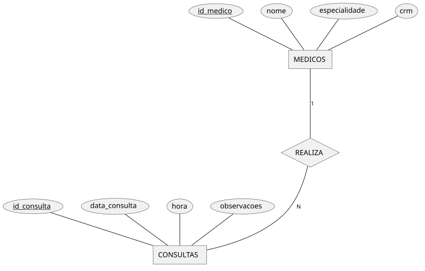
3.10.3.6.1 Exercício 6 - SQL referênte ao diagrama anterior
/* =========================================================
Criar tabelas (sem PK ou FK)
========================================================= */
CREATE TABLE MEDICOS
(
id_medico INT,
nome VARCHAR(255),
especialidade VARCHAR(100),
crm VARCHAR(20)
);
CREATE TABLE CONSULTAS
(
id_consulta INT,
data_consulta DATE,
hora TIME,
observacoes VARCHAR(255)
);
/* =========================================================
Definir chaves primárias
========================================================= */
ALTER TABLE MEDICOS ADD PRIMARY KEY (id_medico);
ALTER TABLE CONSULTAS ADD PRIMARY KEY (id_consulta);
/* =========================================================
Criar coluna para futura chave estrangeira
========================================================= */
-- Relacionamento MEDICOS 1:N CONSULTAS
ALTER TABLE CONSULTAS ADD COLUMN id_medico INT;
/* =========================================================
Criar chave estrangeira
========================================================= */
ALTER TABLE CONSULTAS ADD CONSTRAINT fk_consultas_medicos FOREIGN KEY (id_medico) REFERENCES MEDICOS (id_medico);3.10.3.7 Exercício #7
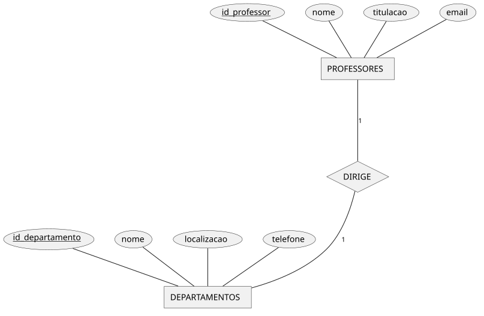
3.10.3.7.1 Exercício 7 - SQL referênte ao diagrama anterior
/* =========================================================
Criar tabelas (sem PK ou FK)
========================================================= */
CREATE TABLE PROFESSORES
(
id_professor INT,
nome VARCHAR(255),
titulacao VARCHAR(100),
email VARCHAR(255)
);
CREATE TABLE DEPARTAMENTOS
(
id_departamento INT,
nome VARCHAR(255),
localizacao VARCHAR(255),
telefone VARCHAR(20)
);
/* =========================================================
Definir chaves primárias
========================================================= */
ALTER TABLE PROFESSORES ADD PRIMARY KEY (id_professor);
ALTER TABLE DEPARTAMENTOS ADD PRIMARY KEY (id_departamento);
/* =========================================================
Criar coluna para futura chave estrangeira
========================================================= */
-- Relacionamento 1:1 entre PROFESSORES e DEPARTAMENTOS
-- Aqui vamos colocar a FK em DEPARTAMENTOS, vinculando ao professor responsável
ALTER TABLE DEPARTAMENTOS ADD COLUMN id_professor INT;
/* =========================================================
Criar chave estrangeira
========================================================= */
ALTER TABLE DEPARTAMENTOS ADD CONSTRAINT fk_departamentos_professores FOREIGN KEY (id_professor) REFERENCES PROFESSORES (id_professor);3.10.3.8 Exercício #8
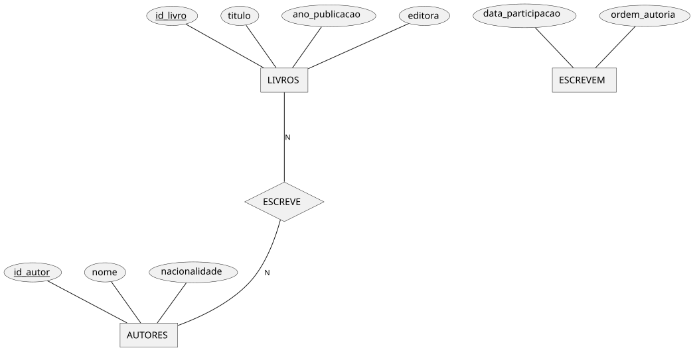
3.10.3.8.1 Exercício 8 - SQL referênte ao diagrama anterior
/* =========================================================
Criar tabelas (sem PK ou FK)
========================================================= */
CREATE TABLE LIVROS
(
id_livro INT,
titulo VARCHAR(255),
ano_publicacao INT,
editora VARCHAR(255)
);
CREATE TABLE AUTORES
(
id_autor INT,
nome VARCHAR(255),
nacionalidade VARCHAR(100)
);
/* Tabela para relacionamento N:M com atributos */
CREATE TABLE ESCREVEM
(
data_participacao DATE,
ordem_autoria INT
);
/* =========================================================
Definir chaves primárias
========================================================= */
ALTER TABLE LIVROS ADD PRIMARY KEY (id_livro);
ALTER TABLE AUTORES ADD PRIMARY KEY (id_autor);
/* =========================================================
Criar colunas para futuras chaves estrangeiras
========================================================= */
ALTER TABLE ESCREVEM ADD COLUMN id_livro INT, ADD COLUMN id_autor INT;
/* =========================================================
Criar chaves estrangeiras
=====================================
ALTER TABLE ESCREVEM ADD CONSTRAINT fk_escrevem_livros FOREIGN KEY (id_livro) REFERENCES LIVROS (id_livro);
ALTER TABLE ESCREVEM ADD CONSTRAINT fk_escrevem_autores FOREIGN KEY (id_autor) REFERENCES AUTORES (id_autor);
/* =========================================================
Definir chave primária composta da tabela ESCREVEM
========================================================= */
ALTER TABLE ESCREVEM ADD PRIMARY KEY (id_livro, id_autor);3.10.3.9 Exercício #9
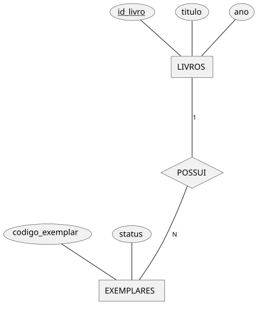
3.10.3.9.1 Exercício 9 - SQL referênte ao diagrama anterior
/* =========================================================
Criar tabelas (sem PK ou FK)
========================================================= */
CREATE TABLE LIVROS
(
id_livro INT,
titulo VARCHAR(255),
ano INT
);
CREATE TABLE EXEMPLARES
(
codigo_exemplar INT,
status VARCHAR(50)
);
/* =========================================================
Definir chaves primárias
========================================================= */
ALTER TABLE LIVROS ADD PRIMARY KEY (id_livro);
/* A chave primária de EXEMPLARES será composta depois, usando FK + codigo_exemplar */
/* =========================================================
Criar coluna para futura chave estrangeira
========================================================= */
-- Relacionamento LIVROS 1:N EXEMPLARES
ALTER TABLE EXEMPLARES ADD COLUMN id_livro INT;
/* =========================================================
Criar chave estrangeira
========================================================= */
ALTER TABLE EXEMPLARES ADD CONSTRAINT fk_exemplares_livros FOREIGN KEY (id_livro) REFERENCES LIVROS (id_livro);
/* =========================================================
Definir chave primária composta da tabela EXEMPLARES
========================================================= */
ALTER TABLE EXEMPLARES ADD PRIMARY KEY (id_livro, codigo_exemplar);3.10.3.10 Exercício #10
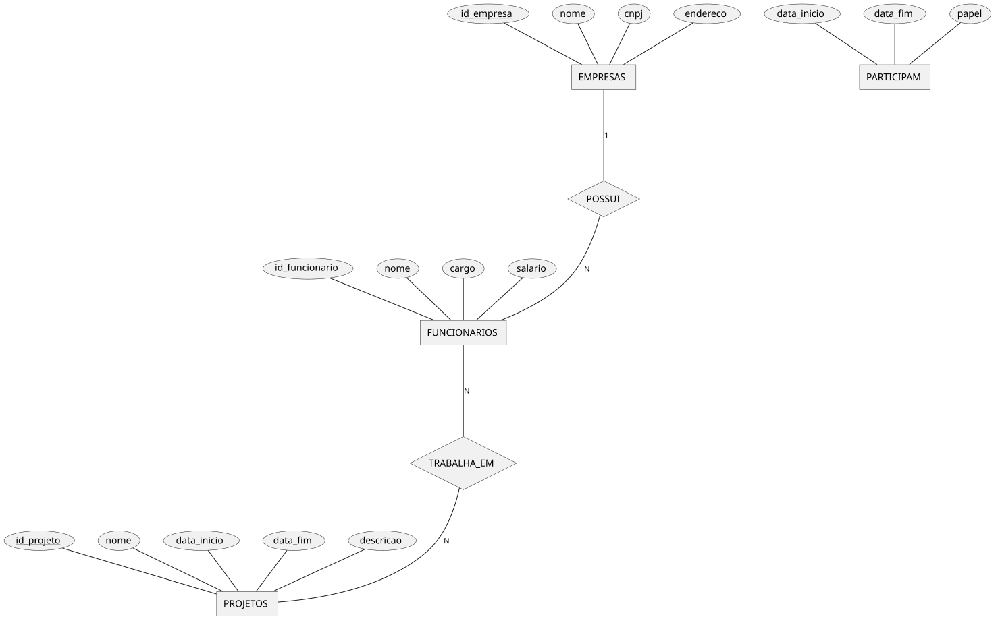
3.10.3.10.1 Exercício 10 - SQL referênte ao diagrama anterior
/* =========================================================
Criar tabelas (sem PK ou FK)
========================================================= */
CREATE TABLE EMPRESAS (
id_empresa INT,
nome VARCHAR(255),
cnpj CHAR(14),
endereco VARCHAR(255)
);
CREATE TABLE FUNCIONARIOS (
id_funcionario INT,
nome VARCHAR(255),
cargo VARCHAR(100),
salario DECIMAL(10,2)
);
CREATE TABLE PROJETOS (
id_projeto INT,
nome VARCHAR(255),
data_inicio DATE,
data_fim DATE,
descricao VARCHAR(255)
);
CREATE TABLE PARTICIPAM (
data_inicio DATE,
data_fim DATE,
papel VARCHAR(100)
);
/* =========================================================
Definir chaves primárias
========================================================= */
ALTER TABLE EMPRESAS ADD PRIMARY KEY (id_empresa);
ALTER TABLE FUNCIONARIOS ADD PRIMARY KEY (id_funcionario);
ALTER TABLE PROJETOS ADD PRIMARY KEY (id_projeto);
/* A tabela PARTICIPAM terá PK composta, definida depois */
/* =========================================================
Criar colunas para futuras chaves estrangeiras
========================================================= */
-- Relacionamento EMPRESAS 1:N FUNCIONARIOS
ALTER TABLE FUNCIONARIOS ADD COLUMN id_empresa INT;
-- Relacionamento FUNCIONARIOS N:M PROJETOS
ALTER TABLE PARTICIPAM ADD COLUMN id_funcionario INT, ADD COLUMN id_projeto INT;
/* =========================================================
Criar chaves estrangeiras
========================================================= */
ALTER TABLE FUNCIONARIOS ADD CONSTRAINT fk_funcionarios_empresas FOREIGN KEY (id_empresa) REFERENCES EMPRESAS (id_empresa);
ALTER TABLE PARTICIPAM ADD CONSTRAINT fk_participam_funcionarios FOREIGN KEY (id_funcionario) REFERENCES FUNCIONARIOS (id_funcionario);
ALTER TABLE PARTICIPAM ADD CONSTRAINT fk_participam_projetos FOREIGN KEY (id_projeto) REFERENCES PROJETOS (id_projeto);
/* =========================================================
Definir chave primária composta da tabela PARTICIPAM
========================================================= */
ALTER TABLE PARTICIPAM ADD PRIMARY KEY (id_funcionario, id_projeto);